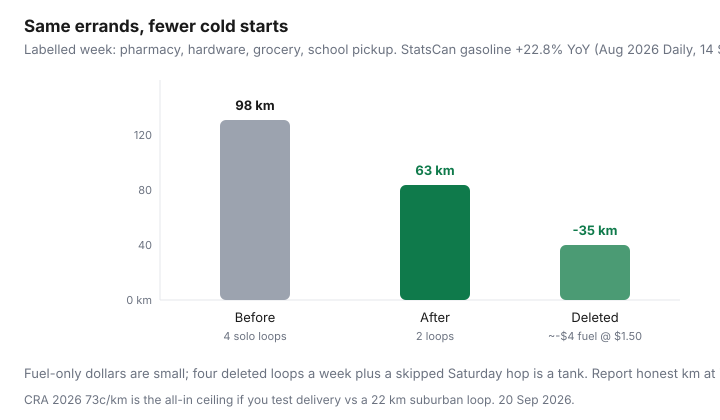

Transportation · Kilometres
How to cut driven kilometres in Canada with errand batching that actually sticks
Canadian households do not waste fuel on one heroic road trip. They waste it on Tuesday pharmacy, Wednesday soccer, Thursday “we forgot milk,” and Saturday Costco that could have been Thursday-after-school. Each solo loop looks cheap. Together they are a tank. Statistics Canada’s 14 Sep 2026 Daily put August gasoline 22.8% higher than a year earlier. You do not control the litre. You control whether the Civic leaves the driveway four times for things that fit one loop.
This page is the calendar system. Efficiency behind the wheel is the companion habits guide. Loyalty on remaining litres: PC vs Petro-Points vs Scene+.
Disclosure: Gas-rewards cards are an opportunity type on the litres you still buy. Saving Optimizer may earn a commission if we later add partner links. We do not currently claim issuer or banner partnerships. Delivery fees are listed prices, not endorsements.
Key takeaways
- Map one week of drives. Circle every trip that could have waited 24–48 hours.
- Grocery + school + appointments is the default Canadian loop. Build it on the two days you are already out.
- Delivery wins on long suburban loops and loses on a 3 km discounter hop — price the fee against kilometres and the impulse cart you avoid.
- Fewer kilometres can move an insurance mileage band if you report them honestly (FSRA-aligned education, not a quote).
- Ratehub’s 2026 gas placeholder is $165/month (29 Apr 2026). Deleting 15% of kilometres is a more reliable cut than hunting 2¢/L across town.
Map recurring trips and combine them
For seven days, log every time a household vehicle moves: purpose, kilometres, whether it could have waited. You want three columns: must be that hour (work, pickup), can batch (pharmacy, hardware, library), can delete (browsing, duplicate grocery). Most families discover a Tuesday-Thursday-Saturday pattern that is really one Thursday loop plus one Saturday warehouse run.
Use the odometer or the trip computer. Guessing “it’s just around the corner” is how 6 km becomes 11 with a second store.
Grocery, school, and appointments routing
Anchor the loop on the immovable pickup. School at 3:40 is a better grocery hour than a dedicated 10 a.m. Saturday drive, even if the store is busier — you were in the car anyway. Book dentists and licence renewals on the same corridor as the commute, not on a third weekday.
- Flyer planning still happens at home (flyer meals). The drive is one, the list is one.
- Costco monthly, discounter weekly — do not invent a mid-week warehouse “because we were close.”
- Two-store math only when the gap beats kilometres. CRA’s 2026 73¢/km allowance is a harsh ceiling for that test.
Delivery vs drive trade-offs
| Errand | Drive cost (fuel only / 73¢ test) | Delivery or substitute | Usually wins |
|---|---|---|---|
| 4 km round trip, discounter milk | ~$0.50 fuel / $2.92 at 73¢ | $7–$12 delivery + tip | Drive, or walk; do not deliver milk |
| 22 km suburban loop, full cart | ~$2.60 fuel / $16 at 73¢ + time | $10 pickup or $15 delivery; watch substitutions | Pickup if you were not otherwise out; batch if you were |
| Pharmacy + hardware + grocery (3 solo trips) | Three parkings, three cold starts | One loop, or deliver only the heavy case of water | Batch. Split delivery is for the awkward SKU |

Impact on insurance mileage bands
Insurers often ask for commuting distance and annual kilometres. A household that was “18,000 km” on habit and is honestly “13,000 km” after batching plus hybrid work should say so at renewal. That can move a band. It can also do nothing if you are still mid-band. FSRA’s consumer pages emphasise accurate information — see legal premium levers. Do not lower the number in January and drive the old pattern by June.
Fuel and maintenance savings estimates
Worked sketch (labelled): 1,200 km/month household driving, 8 L/100 km, $1.50/L → 96 L → $144 (near Ratehub’s $165 line if you include a bit more highway). Cut 20% of kilometres via batching: −19 L ≈ $29/month plus a little wear. That is not a hybrid. It is also not theoretical if the log shows four deleted loops. Maintenance (brakes, tires, oil) moves more slowly; still, kilometres you do not drive are kilometres you do not salt into the rocker panels.
Family calendar systems that prevent duplicate trips
- One shared calendar named “car loops,” not four reminders in four apps.
- A running list on the fridge: if it is not on the list, it waits for the next loop unless it is medicine or a true emergency.
- Driver of the loop owns the list. Other adults add items before 4 p.m., not via a 5:40 text from the aisle.
- Teen with a licence: they inherit a loop, they do not invent a fifth.
When transit or a bike replaces a batch entirely
Downtown errands with nasty parking are often cheaper on PRESTO ($3.30 adult) or a bike than on a loop that still needs a stall. Heavy weekly grocery can stay in the car; the library-plus-pharmacy can leave it. E-bike vs pass math lives in the e-bike guide. Winter: keep the car for the heavy loop and let January slush kill the “quick” extra drives first — those are the dangerous, salty ones anyway.
Batching rule: if the car is already going, the list goes with it. If the car is not going, the item waits 24 hours. The third identical drive in a week is the one you can usually delete.
Sources & date stamps
- Statistics Canada, The Daily, 14 Sep 2026 — August 2026 gasoline +22.8% YoY; all-items +3.0%.
- Ratehub 2026 TCO (29 Apr 2026) — $165/month gas placeholder; $1,373 blended ownership.
- Finance Canada, 2026 automobile allowance — 73¢/km first 5,000 km in the provinces (ceiling for extra-trip tests).
- FSRA consumer auto-insurance shopping pages — honest mileage. Not a quote.
Frequently asked questions
How much can errand batching save on Canadian fuel?
A labelled sketch: drop two 8 km extra loops a week at 8 L/100 km and $1.50/L and you are near 5 L and $8/month — small until you add parking and time. Four deleted loops plus a skipped Saturday “quick shop” is how tanks stretch. Use your trip computer, not a forum MPG.
Does cutting kilometres lower my insurance?
Sometimes, if you honestly cross into a lower mileage band and tell the insurer at the next rating conversation. FSRA-style education starts with accurate kilometres. Do not forecast a band you have not driven for a year.
Is grocery delivery cheaper than driving in Canada?
When the fee, tip, and substitutions beat your kilometres, parking, and impulse cart. A $9.99 delivery on a 2 km drive to No Frills usually loses. A $9.99 delivery that deletes a 22 km suburban loop plus a $4 flash snack can win. Run the receipt.
How do I make batching stick with a family calendar?
One shared ‘out of the house’ block, not four personal to-do lists. Assign a driver-of-the-loop. Ban surprise solo pharmacy runs unless someone is actually ill.
When should transit or a bike replace the batch?
When the loop is downtown, parking is the bill, and the errands fit a bag. A PRESTO tap at $3.30 can beat a 6 km drive that still needs a stall. Winter reality: keep one monthly car loop for heavy grocery and let the rest ride.